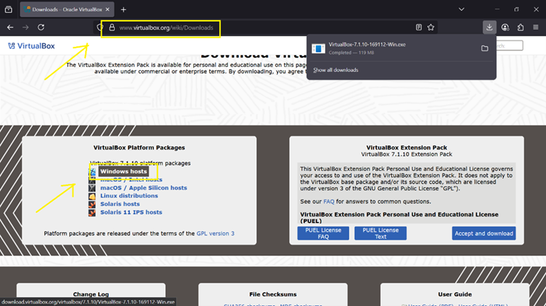
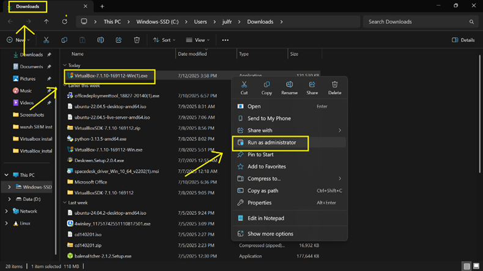
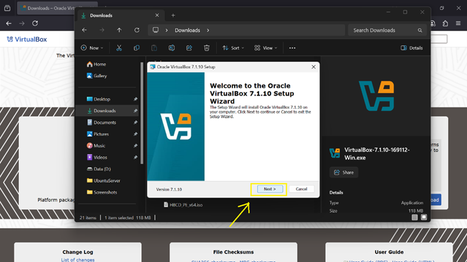
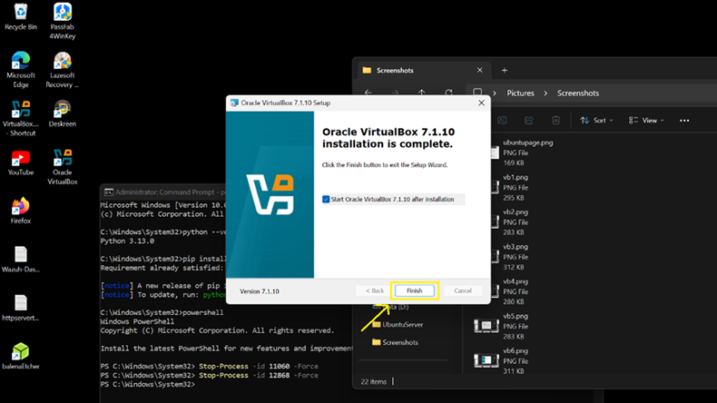

Overview
VirtualBox is a type-2 hypervisor used to run multiple operating systems on a single host machine. This guide establishes the foundation for lab environments used in security and networking simulations.
Step 1 — Download VirtualBox
- Go to official VirtualBox downloads page.
- Select Windows Hosts installer.

Step 2 — Run Installer
- Open installer from Downloads folder.
- Run as Administrator.

Step 3 — Installation Wizard
- Proceed with default settings.
- Accept license agreement.

Step 4 — Complete Installation
- Install dependencies when prompted.
- Finish setup and reboot system.

Install Complete
VirtualBox is now ready for use to deploy the following virtual machines:
- Kali-Linux VM
- Windows 10 VM
- Ubuntu server / Wazuh SIEM
- pfSense firewall